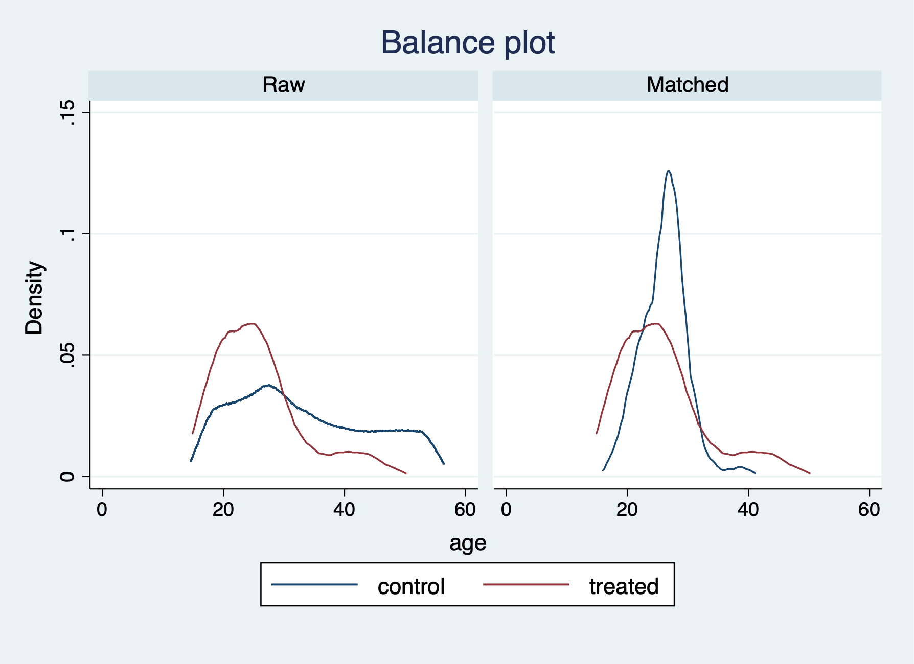
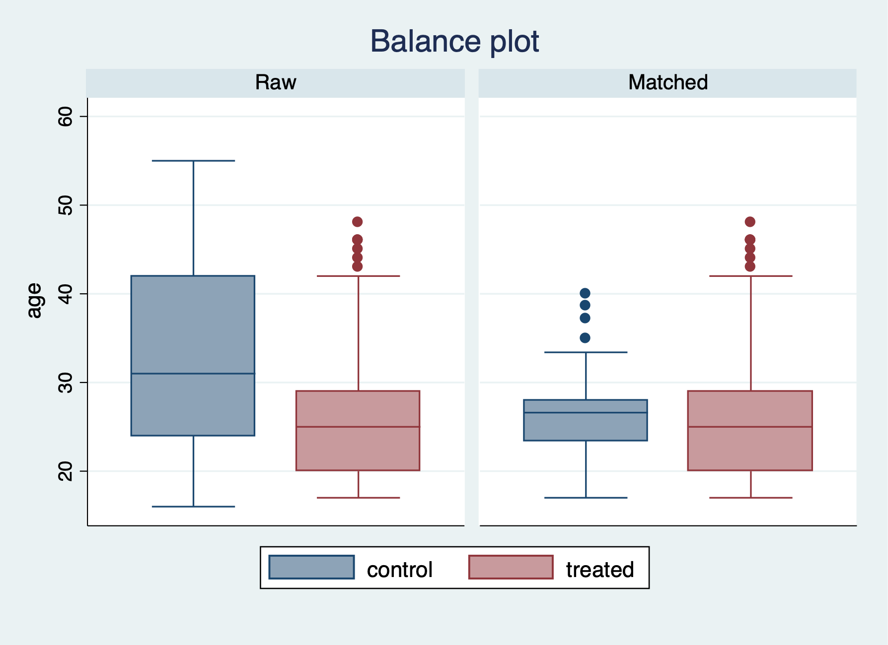
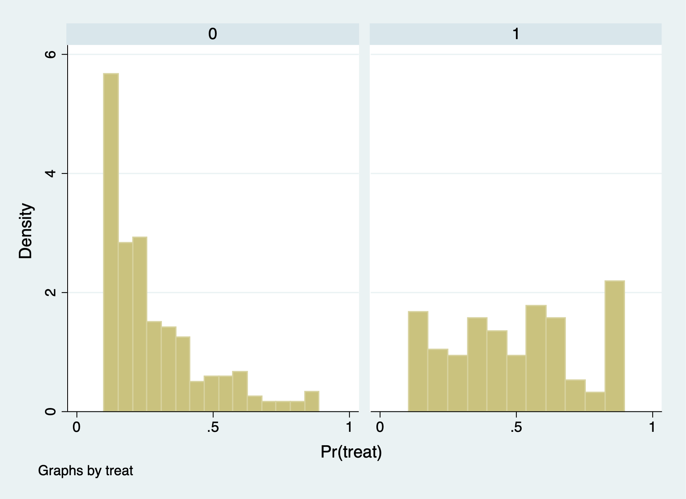
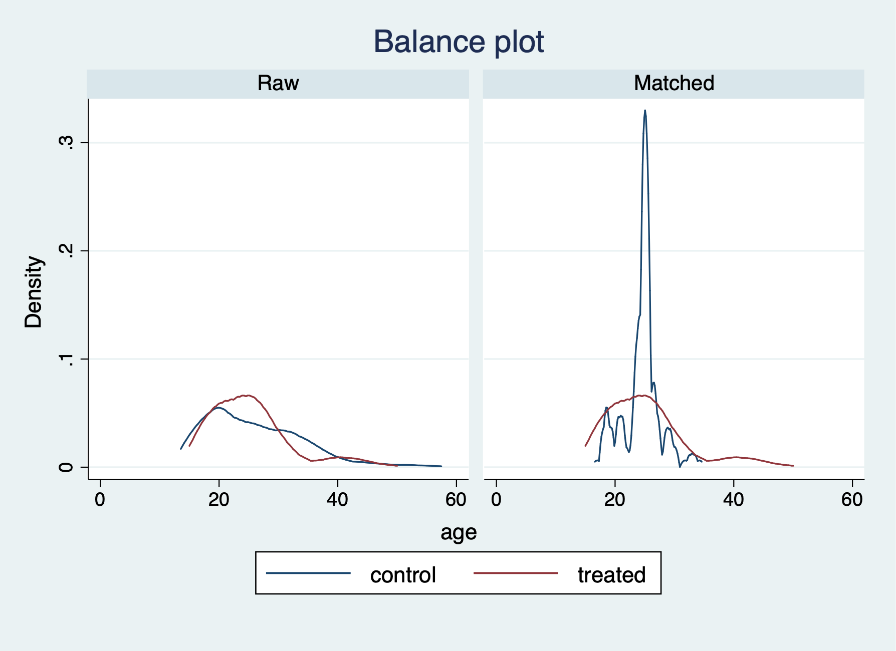
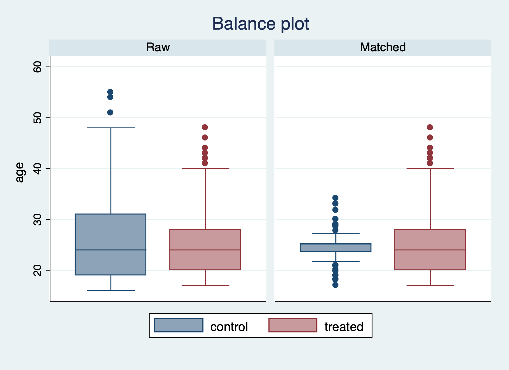

Chapter 1 Propensity Score Matching
We will go through the process of manually estimating propensity scores before we use the teffects commands. After estimating the propensity scores, we will estimate the \(ATE\) and \(ATT\)
We will use the data from Dehejia and Wahba (2002) for treatment from Department of Labor Employment and Training Adminstration (ETA) job training. Instead of using the control group from the orgininal RCT, we will use data from the Current Population Survey (CPS) for a comparison group.
1.1 Generate propensity score
First, we will import and drop the experimental control group, so we can append our comparison group from the CPS.
Now merge in the CPS controls from footnote 2 of Table 2 (Dehejia and Wahba 2002)
Now we will generate additional variables of interest: age, education, demographics, and unemployment status
gen agesq=age*age
gen agecube=age*age*age
gen edusq=educ*edu
gen u74 = 0 if re74!=.
replace u74 = 1 if re74==0
gen u75 = 0 if re75!=.
replace u75 = 1 if re75==0
gen interaction1 = educ*re74
gen re74sq=re74^2
gen re75sq=re75^2
gen interaction2 = u74*hispNext, we will use logistic regression to estimate \(\beta\) and estimate the \(p\)-scores.
logit treat age agesq agecube educ edusq marr nodegree black hisp re74 re75 u74 u75 interaction1
predict pscoreIteration 0: log likelihood = -1011.0713
Iteration 1: log likelihood = -612.55814
Iteration 2: log likelihood = -429.05652
Iteration 3: log likelihood = -406.25926
Iteration 4: log likelihood = -404.18813
Iteration 5: log likelihood = -404.15992
Iteration 6: log likelihood = -404.15991
Logistic regression Number of obs = 16,177
LR chi2(14) = 1213.82
Prob > chi2 = 0.0000
Log likelihood = -404.15991 Pseudo R2 = 0.6003
------------------------------------------------------------------------------
treat | Coef. Std. Err. z P>|z| [95% Conf. Interval]
-------------+----------------------------------------------------------------
age | 2.425229 .3500651 6.93 0.000 1.739114 3.111344
agesq | -.0672395 .0111308 -6.04 0.000 -.0890555 -.0454234
agecube | .0005685 .0001113 5.11 0.000 .0003505 .0007866
educ | .9247846 .2500694 3.70 0.000 .4346576 1.414912
edusq | -.0572021 .0136202 -4.20 0.000 -.0838972 -.030507
marr | -1.556471 .2517687 -6.18 0.000 -2.049929 -1.063013
nodegree | .9270591 .3254621 2.85 0.004 .2891651 1.564953
black | 3.850668 .2662868 14.46 0.000 3.328755 4.37258
hisp | 1.673885 .4099129 4.08 0.000 .8704704 2.4773
re74 | -.0002203 .0001086 -2.03 0.043 -.0004332 -7.40e-06
re75 | -.0001969 .0000378 -5.21 0.000 -.000271 -.0001228
u74 | 1.749522 .2897311 6.04 0.000 1.18166 2.317385
u75 | .00944 .257531 0.04 0.971 -.4953114 .5141915
interaction1 | .0000222 9.08e-06 2.45 0.014 4.43e-06 .00004
_cons | -35.22098 3.797922 -9.27 0.000 -42.66477 -27.77719
------------------------------------------------------------------------------
Note: 3 failures and 0 successes completely determined.
(option pr assumed; Pr(treat))Now, we will compare the propensity score between treatment and comparison groups with summary statistics and histograms.
Pr(treat)
-------------------------------------------------------------
Percentiles Smallest
1% .0011757 .0010614
5% .0072641 .0011757
10% .0260147 .0018463 Obs 185
25% .1322174 .0020981 Sum of Wgt. 185
50% .4001992 Mean .4253567
Largest Std. Dev. .3076908
75% .6706164 .9356451
90% .8866026 .93718 Variance .0946736
95% .9021386 .9374608 Skewness .1916478
99% .9374608 .9384554 Kurtosis 1.732134
Pr(treat)
-------------------------------------------------------------
Percentiles Smallest
1% 5.90e-07 1.18e-09
5% 1.72e-06 4.07e-09
10% 3.58e-06 4.24e-09 Obs 15,992
25% .0000193 1.55e-08 Sum of Wgt. 15,992
50% .0001187 Mean .0066476
Largest Std. Dev. .0416672
75% .0009635 .8786677
90% .0066319 .8893389 Variance .0017362
95% .0163109 .9099022 Skewness 12.2493
99% .1551548 .9239787 Kurtosis 187.8692The comparison group has a mean propensity score of 0.01. The treatment group has a mean propensity score is 0.42
 It seems that there is very little overlap for the common support assumption. It would be problematic to estimate the \(ATE\) and \(ATT\) without trimming to get common support.
It seems that there is very little overlap for the common support assumption. It would be problematic to estimate the \(ATE\) and \(ATT\) without trimming to get common support.
1.2 Estimate the \(ATE\) and \(ATT\) without trimming
We will estimate the \(ATE\) and \(ATT\) with the teffects psmatch command. We will use the 5 nearest neighbors with the option nn(5). Note that Stata generates new variables defined by you. Here we are defining pstub_cps.
Estimate \(ATT\)
teffects psmatch (re78) (treat age agesq agecube educ edusq marr nodegree black ///
hisp re74 re75 u74 u75 interaction1, logit), atet gen(pstub_cps) nn(5)
drop pstub_cps*Treatment-effects estimation Number of obs = 16,177
Estimator : propensity-score matching Matches: requested = 5
Outcome model : matching min = 5
Treatment model: logit max = 26
------------------------------------------------------------------------------
| AI Robust
re78 | Coef. Std. Err. z P>|z| [95% Conf. Interval]
-------------+----------------------------------------------------------------
ATET |
treat |
(1 vs 0) | 1725.082 700.0586 2.46 0.014 352.9921 3097.172
------------------------------------------------------------------------------\(\widehat{ATT} = \$1,725.082\)
We have a few more options for checking the balance after the PSM with nearest neighbor of 5. We can use the teblance commands to check our balance. tebalance density will give us a distribution of propensity scores by our variable of choice between treatment and comparison. We can also use tebalance box that will give is a box-and-whisker chart for the propensity scores by our variable of choice between treatment and comparison.
Covariate balance summary
Raw Matched
-----------------------------------------
Number of obs = 16,177 370
Treated obs = 185 185
Control obs = 15,992 185
-----------------------------------------
-----------------------------------------------------------------
| Means Variances
| Control Treated Control Treated
----------------+------------------------------------------------
age | 33.22524 25.81622 121.9968 51.1943
agesq | 1225.906 717.3946 615814.1 185978
agecube | 49305.85 21554.66 2.04e+09 4.40e+08
educ | 12.02751 10.34595 8.241754 4.042714
edusq | 152.9023 111.0595 4511.316 1544.795
marr | .7117309 .1891892 .2051829 .1542303
nodegree | .2958354 .7081081 .2083299 .2078143
black | .0735368 .8432432 .0681334 .1329025
hisp | .072036 .0594595 .066851 .056228
re74 | 14016.8 2095.574 9.16e+07 2.39e+07
re75 | 13650.8 1532.055 8.59e+07 1.04e+07
u74 | .1196223 .7081081 .1053194 .2078143
u75 | .1093047 .6 .0973632 .2413043
interaction1 | 171147.6 22898.73 1.67e+10 3.29e+09
-----------------------------------------------------------------After running tebalance summarize, we can see without trimming that our covariates are not really balanced between treatment and comparison groups.


Next, we will estimate the \(ATE\) with teffects psmatch.
teffects psmatch (re78) (treat age agesq agecube educ edusq marr nodegree black ///
hisp re74 re75 u74 u75 interaction1, logit), ate gen(pstub_cps) nn(5)
drop pstub_cps*We find that we have an error estimating the \(ATE\), since we lack common support.
1.3 Trim the data
We will use the trim the \(p\)-scores. All values below \(10\%\) and above \(90\%\) will be dropped.
We can see that the comparison group has a lot of observations with \(p\)-scores less than or equal to 0.1 (15,802), but we only drop 14 observations with \(p\)-scores greater than or equal 0.9.
(15,802 observations deleted)
(14 observations deleted)1.4 Check for balance again

We can now see we have better overlap between treatment and comparison after trimming the extreme values of the \(p\)-scores.1.5 Reestimate the \(ATT\) and \(ATE\)
teffects psmatch (re78) (treat age agesq agecube educ edusq marr nodegree black ///
hisp re74 re75 u74 u75 interaction1, logit), ate gen(pstub_cps) nn(5)
drop pstub_cps*Treatment-effects estimation Number of obs = 361
Estimator : propensity-score matching Matches: requested = 5
Outcome model : matching min = 5
Treatment model: logit max = 8
------------------------------------------------------------------------------
| AI Robust
re78 | Coef. Std. Err. z P>|z| [95% Conf. Interval]
-------------+----------------------------------------------------------------
ATE |
treat |
(1 vs 0) | 1758.837 724.5845 2.43 0.015 338.6778 3178.997
------------------------------------------------------------------------------\(\widehat{ATE}= \$1758.84\)
teffects psmatch (re78) (treat age agesq agecube educ edusq marr nodegree black ///
hisp re74 re75 u74 u75 interaction1, logit), atet gen(pstub_cps) nn(5)Treatment-effects estimation Number of obs = 361
Estimator : propensity-score matching Matches: requested = 5
Outcome model : matching min = 5
Treatment model: logit max = 8
------------------------------------------------------------------------------
| AI Robust
re78 | Coef. Std. Err. z P>|z| [95% Conf. Interval]
-------------+----------------------------------------------------------------
ATET |
treat |
(1 vs 0) | 2519.446 866.7552 2.91 0.004 820.6375 4218.255
------------------------------------------------------------------------------\(\widehat{ATE}= \$2519.446\)
1.6 Recheck for balance
Covariate balance summary
Raw Matched
-----------------------------------------
Number of obs = 361 266
Treated obs = 133 133
Control obs = 228 133
-----------------------------------------
-----------------------------------------------------------------
| Means Variances
| Control Treated Control Treated
----------------+------------------------------------------------
age | 25.93421 25.2406 64.98684 45.00228
agesq | 737.2851 681.7519 237422 158499.2
agecube | 22966.88 19825.29 6.03e+08 3.66e+08
educ | 10.46491 10.2406 4.584667 3.850763
edusq | 114.0789 108.6917 1830.681 1331.306
marr | .2192982 .1428571 .1719607 .1233766
nodegree | .6315789 .7518797 .233712 .1879699
black | .9342105 .9398496 .061732 .0569606
hisp | .0438596 .037594 .0421207 .0364548
re74 | 2552.555 1560.604 1.93e+07 1.56e+07
re75 | 1570.309 1002.193 7324536 3233917
u74 | .5570175 .7669173 .247836 .1801094
u75 | .4868421 .6390977 .2509274 .2323992
interaction1 | 27361.94 16425.15 2.44e+09 1.81e+09
-----------------------------------------------------------------Our balance is greatly improved after trimming the tail ends of the propensity scores.
Let’s check the variable age with tebalance density and tebalance box.

